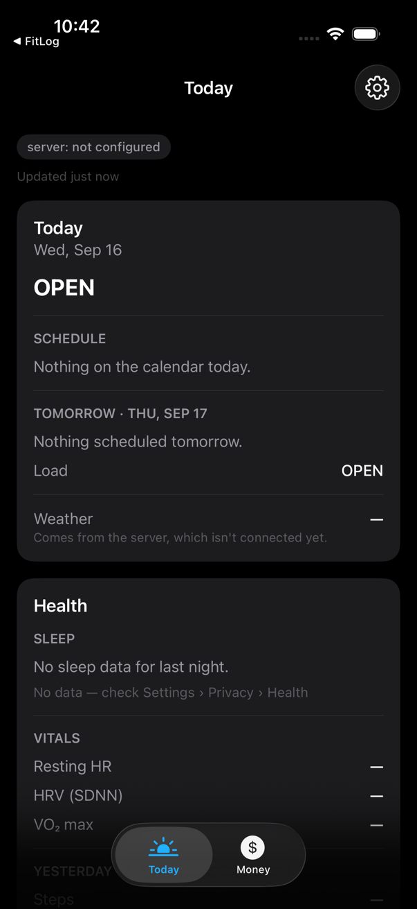

Personal Dashboard — one glance each morning, and nothing leaves my network
A private system for one person: a Mac wakes at 05:30, gathers the day’s weather, markets and, in later phases, finances and email into a single file, and an iPhone app merges it with sleep and calendar data that never leave the phone. I specified the whole thing before any code existed. Shown here as a case study; it runs only inside my own network.
Product specificationPrivacy by designiOSPython serviceBuilt with Claude Code
2,349lines of specification and decision log written before and during the build
367automated tests across the phone app and the Mac service
2codebases in two languages, held together by one tested contract
0AI calls, public endpoints or third-party phone libraries, by design
The idea
Most mornings I want the same few things at a glance — how loaded the day is, the weather, how I slept, where the markets are, and eventually where my money stands — without opening six apps and without any of that data going to a service. So the constraints came first: everything read-only, so the system can never move money or send mail; nothing on the public internet; no third-party code on the phone; and no AI anywhere in the loop, because the point is that this data never reaches a model. The build was planned in phases so something useful existed from the first week.
How it fits together
The Mac — always on
1. Wakes at 05:25A scheduled wake, because a morning dashboard that appears at nine is not a morning dashboard.
2. Gathers the dayWeather and markets today; bank balances, brokerage positions, email headlines and statements in later phases. Each source runs on its own, so one failing never blocks the rest.
3. Builds one fileEverything the phone needs, in one small JSON file, rebuilt every morning even if a source failed.
4. Serves it privatelyOnly on my own private network, behind a token. There is no public address at all.
private network only↓private network only→never a public address
The iPhone
5. Fetches the fileOn opening the app or when the night’s sleep arrives from the watch. If the Mac is unreachable, yesterday’s numbers stay, marked as stale.
6. Adds what only the phone knowsSleep, heart rate and activity from Health, and the day’s calendar — read on the device and never sent anywhere.
7. Shows one screen and a widgetA Today tab, a Money tab, and a home-screen widget that can only read the last snapshot.

The Today tab before a Mac has been connected: the honest state of a build that is two phases in. Every empty state is designed — a missing number shows as a dash, and the app never guesses why data is absent.
What it shows
Specifying a system end to end — two codebases, one contract — clearly enough that an AI agent could build it phase by phase.
Privacy as a design decision rather than a setting: read-only scopes, no public surface, no model in the loop.
Planning in phases with an honest status, and leaving the calls that matter to a person.
Status
Phases 0 to 2 of a plan numbered 0 to 8 are complete: the app shell with health and calendar on the device, and the Mac service with weather, markets, serving and scheduling. Finances, email, the real widget and recurring-charge detection are specified for phases 3 to 8.